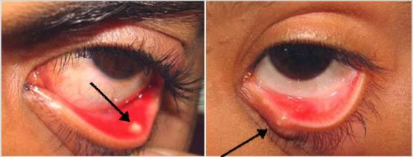

Part I · Hordeolum
Treatment of a stye
- Treatment of the predisposing factors.
- Warm, moist compresses and topical antibiotics (drops and ointment).
- Systemic antibiotics are indicated in severe cases complicated by cellulitis.
- If pointing: drain pus by epilation of the related eyelash with a horizontal incision.
Danger Do not press to evacuate a stye — this is a dangerous area; squeezing may spread infection and cause orbital cellulitis or cavernous sinus thrombosis.
